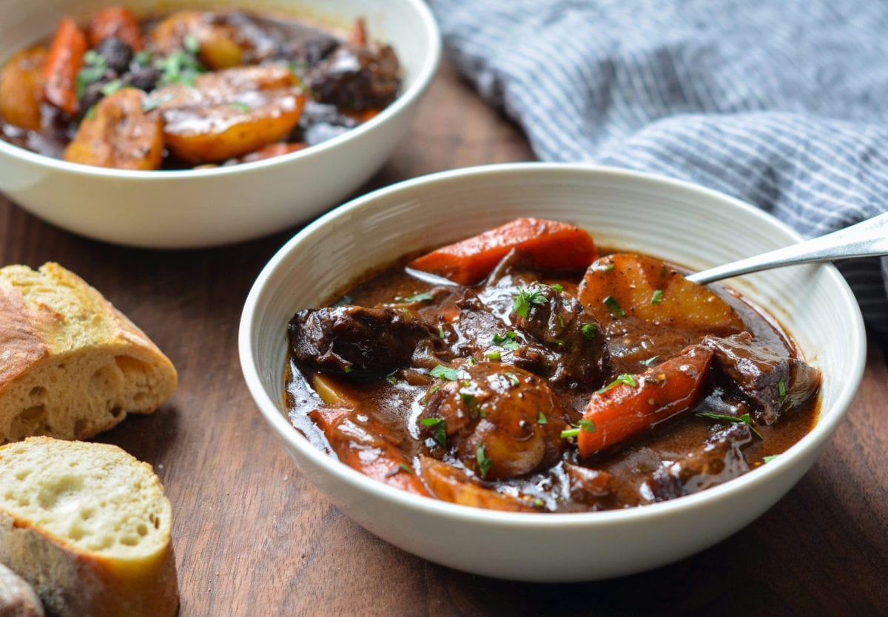

Meat Stew

ingredients
- Beef chuck
- oil
- balsamic vinegar
- onions
- tomato paste
- carrots
- flour
- thyme
- salt & pepper
- garlic
- beef broth
- carrots
- potatoes
cooking steps
- Preheat the oven to 325°F and set a rack in the lower middle position.
- Pat the beef dry and season with the salt and pepper. In a large Dutch oven or heavy soup pot, heat 1 tablespoon of the olive oil over medium-high heat until hot and shimmering. Brown the meat in 3 batches, turning with tongs, for about 5 minutes per batch; add one tablespoon more oil for each batch.
- Add the onions, garlic and balsamic vinegar; cook, stirring with a wooden spoon and scraping the brown bits from bottom of the pan, for about 5 minutes. Add the tomato paste and cook for a minute more. Add the beef with its juices back to the pan and sprinkle with the flour. Stir with wooden spoon until the flour is dissolved, 1 to 2 minutes. Add the wine, beef broth, water, bay leaf, thyme, and sugar. Stir with a wooden spoon to loosen any brown bits from the bottom of the pan and bring to a boil. Cover the pot with a lid, transfer to the preheated oven, and braise for 2 hours.
- Remove the pot from the oven and add the carrots and potatoes. Cover and place back in oven for about an hour more, or until the vegetables are cooked, the broth is thickened, and the meat is tender. Fish out the bay leaf and discard, then taste and adjust seasoning, if necessary. Serve the stew warm -- or let it come to room temperature and then store in the refrigerator overnight or until ready to serve. This stew improves in flavor if made at least 1 day ahead. Reheat, covered, over medium heat. Garnish with fresh parsley, if desired.